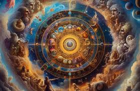

Mitologia Grega
Mitologia grega é o conjunto de mitos dos gregos que explicavam a sua realidade, formando os conceitos da religião politeísta que possuíam. Esses mitos explicavam fenômenos da natureza e valores da sociedade e também formavam a religiosidade dos gregos antigos.
Os gregos acreditavam que os fenômenos da natureza tinham relação com os deuses, assim como os valores que faziam parte de sua vida, como justiça, sabedoria, paz, entre outros. Além disso, os gregos acreditavam que os deuses, apesar de imortais, eram parecidos com os humanos física e comportamentalmente. Assim, os deuses poderiam sentir emoções.
História - Surgimento do Universo
Na mitologia grega o mundo foi feito pelo Caos. Ele vivia num ambiente de trevas, vazio, sem nada, então resolveu criar Gaia, a Mãe Terra, Eros (o amor), Nyx (a noite), e o Tártaro (profundezas da terra).
Gaia, por sua vez, criou Urano, que representava o céu. Eles foram amantes e tiveram 18 filhos (titãs, ciclopes e hecatônquiros). O deus céu não queria que seus filhos tomassem seu lugar, uma vez que eles eram fortes e vorazes. Por causa disso, prendeu todos de volta no ventre de Gaia, que sentia muitas dores, mas não podia libertar seus filhos sem derrotar Urano. Então, ela fez o seu filho mais novo derrotar o pai: Cronos cortou os testículos de Urano, deixando-o sem poder.
O sangue que Urano derramou criou três outros filhos: Tisífone, Megera e Alecto, que significavam castigo, rancor e ódio. Cronos agora tinha poder, mas assim como seu pai, não queria que lhe tirassem o trono, então deixou seus irmãos presos também em Gaia.
Mais tarde, Cronos se casou com uma de suas irmãs, Reia, porém para não correr o risco de ninguém lhe tomar o lugar, devorou todos os filhos. Entretanto, ele não contava com a vingança de sua mãe, que não se conformava com o fato de Cronos ter esquecido dela, que padecia em dores.
Reia evitou que seu último filho fosse devorado. Para isso, escondeu Zeus para que ele pudesse derrotar o pai. E assim foi feito. Com a ajuda dos seus tios, titãs, ciclopes e hecatônquiros, Zeus derrotou Cronos em uma luta de 10 anos, que lhe tirou trono e fez com que ele vomitasse todos os filhos. Como eram deuses, não morreram após serem devorados.
Assim Zeus recuperou o equilíbrio da Terra trazendo Caos de volta e dividiu os poderes entre outros deuses: Poseidon ficou com os mares, Hades com o Tártaro e ele com os céus e a humanidade.

Deuses
Eram 12 os principais deuses, sendo eles os olímpicos, ou seja, que moravam no Olimpo, liderados por Zeus, e Hades mesmo fazendo parte dos 3 irmãos que lideravam o mundo, como ficou com o reino do Submundo, não fazia parte do Olimpo.

Zeus
- Deus do raio e do trovão
- Rei de Olimpo, Rei dos Deuses
- O deus mais forte
- Domina o céu e a terra
- Casou-se com sua irmã Hera
- Filho de Cronos

Hera
- Rainha dos Deuses
- Deusa do Casamento e da Família
- Ciumenta e Vingativa

Poseidon
- Deus dos mares e das águas
- Patrono dos marinheiros e dos cavalos
- Considerado um deus com temperamento instável, explosivo e vingativo
- Filho de Cronos

Atenas
- Deusa grega da sabedoria
- Filha de Zeus, era considerada sua preferida
- Era a patrona de Atenas, e lá ocorria um importante festival em sua homenagem: as Panatenaias
- Um grande templo chamado Parthenon foi construído em Atenas como homenagem à deusa, no século V a.C.

Ares
- Filho de Zeus e Hera
- Deus da guerra
- Relacionado com o aspecto mais brutal da guerra, isto é, a violência e o derramamento de sangue
- Não era um deus popular entre os gregos, embora fosse muito respeitado em Atenas

Deméter
- Deusa dos cereais e da agricultura
- Controla o ciclo das estações (mito de Perséfone)
- Ensina o cultivo aos mortais
- Símbolos: feixe de trigo, tocha, papoula

Apolo
- Deus da música, poesia e artes
- Patrono da medicina (cura e pragas)
- Senhor da profecia em Delfos
- Símbolos: lira, louro, sol

Ártemis
- Deusa da caça e dos animais selvagens
- Protetora das jovens e dos partos
- Ama a virgindade e a liberdade nos bosques
- Símbolos: arco de prata, veado, lua crescente

Hefesto
- Ferreiro divino e artesão dos deuses
- Maneta, porém genial inventor de autômatos
- Governa fogo criativo e vulcões
- Símbolos: martelo, bigorna, tenazes

Afrodite
- Deusa do amor erótico
- Encanta com sua beleza irresistível
- Possui cinto que desperta desejo em quem o vê
- Símbolos: concha, pomba, rosa

Hermes
- Mensageiro alado e deus da comunicação
- Guia das almas para o além (psicopompo)
- Patrono de comerciantes, viajantes e ladrões
- Símbolos: caduceu, sandálias aladas, petaso

Dionísio
- Deus do vinho, êxtase e teatro
- Inspira transes místicos e celebrações dionisíacas
- Patrono dos marginalizados e da ruptura de normas
- Símbolos: tirso, videira, leopardo

Hades
- Soberano do submundo e dos mortos
- Guarda tesouros subterrâneos (metais, gemas)
- Usa elmo de invisibilidade forjado por Hefesto
- Símbolos: cetro bidente, Cérbero, cipreste
Mitologia Romana
A mitologia romana é o conjunto de crenças, histórias, mitos e lendas que foram contadas pelos romanos na antiguidade. Elas foram passadas oralmente de geração em geração. As lendas que compunham a mitologia romana estavam baseadas em relatos sobre a origem de Roma, dos deuses, dos homens e dos fenômenos da natureza.
Os deuses romanos eram imortais, no entanto, possuíam diversas características humanas relacionados aos sentimentos, comportamentos e aparências físicas. Entretanto, diferente da mitologia grega, os deuses romanos não tinham contato com os seres humanos.
História - Surgimento de Roma
Rômulo e Remo são dois irmãos gêmeos que, segundo a mitologia romana, estão diretamente ligados à fundação de Roma, tendo sido Rômulo especificamente o fundador da cidade. Conforme a lenda de Rômulo e Remo, eles eram filhos do deus romano Marte e de Reia Sílvia, mortal filha de Numitor, Rei de Alba Longa. Numitor havia sido deposto por Amúlio, seu próprio irmão, que obrigou sua sobrinha Reia a integrar o grupo das Virgens Vestais.
As vestais eram sacerdotisas com idade entre os 6 e os 10 anos, que cultuavam a deusa romana Vesta e faziam voto de castidade, servindo a ela durante 30 anos. A intenção de Amúlio era dar fim a qualquer descendência de Numitor, evitando que sua sobrinha pudesse gerar futuros requerentes do trono, já que ele próprio tinha interesse em reinar.
No entanto, seduzida pelo deus Marte, Reia acabou por engravidar e deu à luz os gêmeos Rômulo e Remo. Furioso, Amúlio ordenou que os bebês fossem atirados ao rio para morrerem afogados. O cesto onde estavam os bebês, porém, foi parar à margem do rio e os irmãos foram encontrados por uma loba que passou a amamentá-los.
Posteriormente, um pastor de ovelhas chamado Fáustulo encontrou os irmãos perto da entrada de uma caverna e, com sua esposa, criou os meninos como filhos. Já em idade adulta, Remo teve um desentendimento com um pastor local e, por esse motivo, foi entregue ao então rei Amúlio, que o fez prisioneiro.
Com isso, o pai adotivo Fáustulo falou sobre a ascendência dos irmãos ao gêmeo de Remo, Rômulo, que partiu para resgatar o irmão. Após libertar Remo, Rômulo matou o regente Amúlio e os cidadãos locais ofereceram a coroa de Alba Longa aos irmãos, que preferiram devolver o trono ao avô Numitor e fundar uma cidade própria em outro local.
Os irmãos entraram em desacordo sobre qual seria o local ideal; enquanto Rômulo escolheu a região do Monte Palatino, Remo optou pelo Monte Aventino. Como não chegaram a um consenso, decidiram recorrer a um auspício — o ato de observar as aves em busca de um sinal dos deuses. Rômulo afirmou ter visto 12 pássaros sobre o Monte Palatino, enquanto Remo disse ter visto 6 sobre o Monte Aventino, concedendo a vitória a Rômulo.
Na disputa pelo local da nova cidade, Remo não aceitou de bom grado a decisão e Rômulo iniciou a construção de uma muralha ao redor do Monte Palatino. Remo reagiu com ironia, debochando tanto da muralha quanto da cidade do irmão; em determinado momento chegou a subir na muralha, atitude que despertou a fúria de Rômulo, levando-o a matar Remo.
No dia da morte de Remo, em 21 de abril de 753 a.C., ocorre, segundo a lenda, a fundação de Roma pelas mãos de Rômulo.o.
Deuses
Eram 12 os principais deuses, sendo eles os olímpicos, ou seja, que moravam no Olimpo, liderados por Júpiter, e Plutão mesmo fazendo parte dos 3 irmãos que lideravam o mundo, como ficou com o reino do Submundo, não fazia parte do Olimpo.
Júpiter
- Deus do raio, do trovão e da justiça
- Rei do Olimpo, Rei dos deuses
- O deus mais forte
- Domina o céu e a terra
- Casou-se com sua irmã Juno

Juno
- Padroeira do Estado e das mulheres romanas
- Concede nome e identidade aos recém-nascidos (Juno Lucina)
- Conselheira política do Senado celeste
- Símbolos: ganso, cetro, coroa

Netuno
- Guardião das rotas marítimas e portos romanos
- Acalma ou enfurece as ondas conforme os votos recebidos
- Associado a corridas de quadrigas e festivais náuticos (Neptunalia)
- Símbolos: tridente, golfinho, cavalo-marinho, coroa de algas

Minerva
- Inspira engenheiros, artesãos e filósofos
- Protetora das instituições cívicas de Roma
- Preside conselhos de guerra com prudência
- Símbolos: coruja, lança, égide

Marte
- Representa disciplina militar e virtude guerreira romana
- Patrono dos soldados e das fronteiras do Império
- Ligado à fundação de Roma (pai de Rômulo)
- Símbolos: lança, escudo redondo, lobo

Ceres
- Garante fartura de grãos e festivais das colheitas
- Venerada no plebeu Aventino como mãe do povo
- Seu culto assegura paz e prosperidade doméstica
- Símbolos: espiga, coroa de espigas, chifre da abundância

Febo
- Guardião da harmonia e da razão
- Conduz a carruagem solar
- Castiga com flechas pestilentas e cura com luz
- Símbolos: lira, arco, corvo

Diana
- Guardiã das florestas e nascentes
- Invocada nas encruzilhadas para proteção noturna
- Concede partos seguros às mulheres romanas
- Símbolos: tocha, cervo, meia-lua

Vulcano
- Senhor dos fogos subterrâneos e das erupções
- Protetor dos artífices romanos
- Cultuado para evitar incêndios devastadores
- Símbolos: forja, chama, martelo

Vênus
- Personificação da beleza feminina
- Protetora de amantes e casamentos
- Inspira paixões que podem ser pacíficas ou destrutivas
- Símbolos: concha, maçã, pomba

Mercúrio
- Facilita trocas comerciais e lucro rápido
- Protetor das estradas e dos correios romanos
- Inventor da lira e da aritmética
- Símbolos: bolsa, galo, caduceu

Baco
- Deus do vinho, êxtase e teatro
- Inspira transes místicos e celebrações dionisíacas
- Patrono dos marginalizados e da ruptura de normas
- Símbolos: tirso, videira, leopardo

Plutão
- Enfatiza riqueza e prosperidade derivada da terra
- É juiz imparcial das almas no além
- Raramente cultuado abertamente em Roma
- Símbolos: cornucópia, carruagem negra, chave do Hades